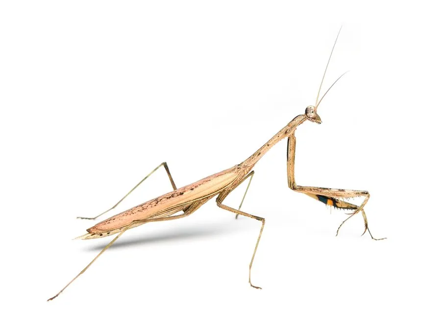

昆虫 · 动物界
绿静螳 Statilia nemoralis

通体翠绿、体态修长的中小型螳螂，栖于林缘高草与灌木，伏击捕食小虫，卵鞘粘附枝条越冬。
- 分类
- 门节肢动物门纲昆虫纲目螳螂目科螳螂科属静螳属
- 栖息环境
- 林缘、灌丛、高草地、农田边缘与湿润草滩
- 地理分布
- 中国华北、华东至华南及日本、朝鲜半岛
- 保护级别
- 常见种，无保护级别；农药使用是主要威胁
物种志
绿静螳的体长约四至五厘米，通体翠绿，体态修长，前胸背板细长，前足内侧有排列整齐的刺，用来夹紧猎物。前翅绿色，边缘略透明，后翅无色透明。头部呈三角形，复眼大，触角细长。与棕静螳相比，它的绿色更鲜亮，体型更瘦，停在高草上几乎与叶脉融为一体。
它分布于中国华北、华东至华南，以及日本、朝鲜半岛，栖息在林缘、灌丛、高草地和农田边缘，喜在阳光充足的枝叶间伏击。成虫捕食蝇类、蛾类、叶蝉等小昆虫，捕食时前足弹出只需几十毫秒。雌螳螂在秋季产卵，卵鞘粘在细枝上越冬，翌年春季孵化。它对农药敏感，化学防治强度大的农田里数量明显减少，可视为农田生态的指示性昆虫。
形态与习性
- 体长约四至五厘米，体态修长
- 体色通体翠绿，前翅边缘略透明
- 前足内侧具整齐的刺，用于夹持猎物
- 食性捕食蝇、蛾、叶蝉等小昆虫
- 繁殖秋季产卵鞘，粘附细枝越冬
- 指示性对农药敏感，可反映农田生态状况
趣味知识
- 它通体翠绿，停在高草上时连叶脉的阴影都对得上，肉眼很难发现。
- 前足弹出只需几十毫秒，人眼几乎看不清那一下。
- 田里农药打得越狠，绿静螳就越少，它是个天然的生态指示器。